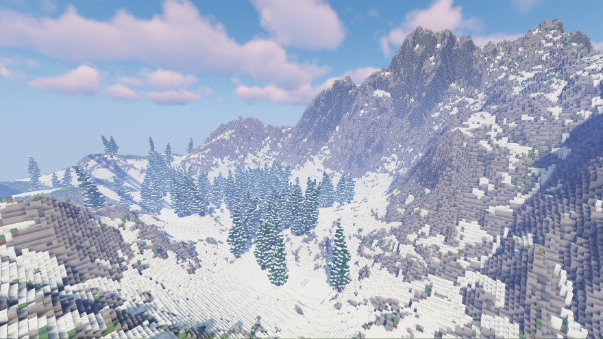
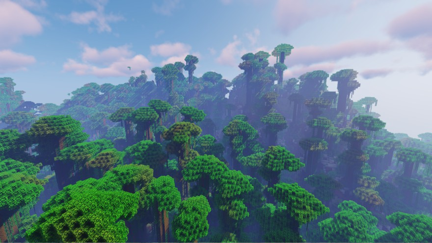
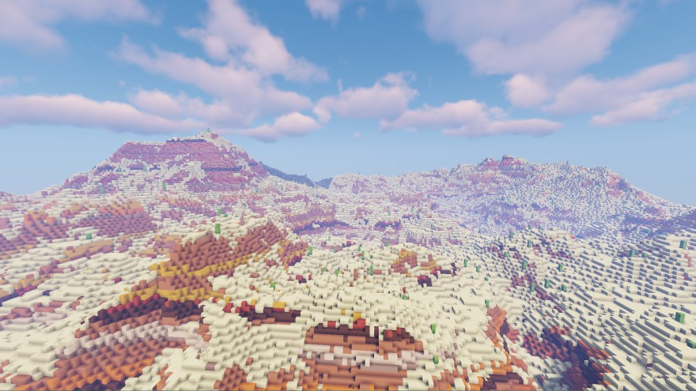

The Adventure Map on Paxterya is a very special place. This custom terrain map created by LeafySeaRabbit offers landscapes way more astonishing than your normal Vanilla world! This makes it the perfect environment for your most beautiful builds and bases!
To get to the Adventure Map, type /warp adventure in the in-game chat. Try it, you'll be greeted by an amazing view! To get back to the Vanilla Map, type /warp vanilla!
To build on the Adventure Map, you have to be a member of Paxterya for at least a month. This is so that place doesn't get too crowded too fast. You'll automatically get permission to build on the Adventure Map after that time. You can also protect your plots like in the Vanilla world.
 Custom trees
Custom trees

Magnificent mountains

Dense jungle

Vast mesa biome